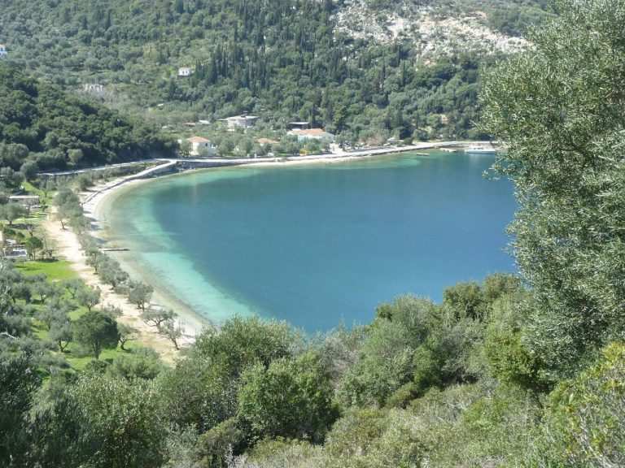

terenceithaque

Dexa est une plage qui se situe à 2 km de vathy, sur le côté droit du port.
La plage propose des zones ombragées naturelles pour un bain de soleil relaxant. Elle est assez unique pour ses eaux bleues transparentes qui permettent une expérience dans des conditions optimales.
La plage dispose de quelques installations touristiques, dont un bar si vous êtes intéressé(e) par les boissons.
Vous cherchez le contenu d'une plage en particulier? Cliquez ici pour accéder à l'index des plages.
Vous n'êtes pas sur la page que vous cherchez? Dirigez vous vers l'index.
Vous vous posez des questions sur le contenu des mises à jour du site? Cliquez ici pour voir toutes les infos sur les mises à jour.
Nous continuons par ici
En savoir plus sur Dexa sur Greeka (site en Anglais).